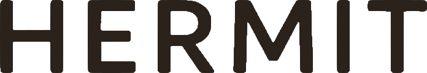

CHARACTER SHEET

A solid shell, spiral cut out
Two dot eyes
Two claws
Legs
Paper gaps separate every piece
One crab, and it's the logo.
- The logo is the character. Every pose moves the logo's own pieces.
- One color: ink on paper, foam on Deep sea.
- Pieces never touch: a paper gap always separates them.
- Two dot eyes, two claws, two legs. No mouth.
- Sea glass only on small props (a pearl, the moon, a mic).
- Never redraw it with an image model; use scripts/brand/mascot.py.
Ink #2B221B
Paper #F5EDE1
Sea glass (props) #4F7C6D
Foam (Deep sea) #E7F1F0